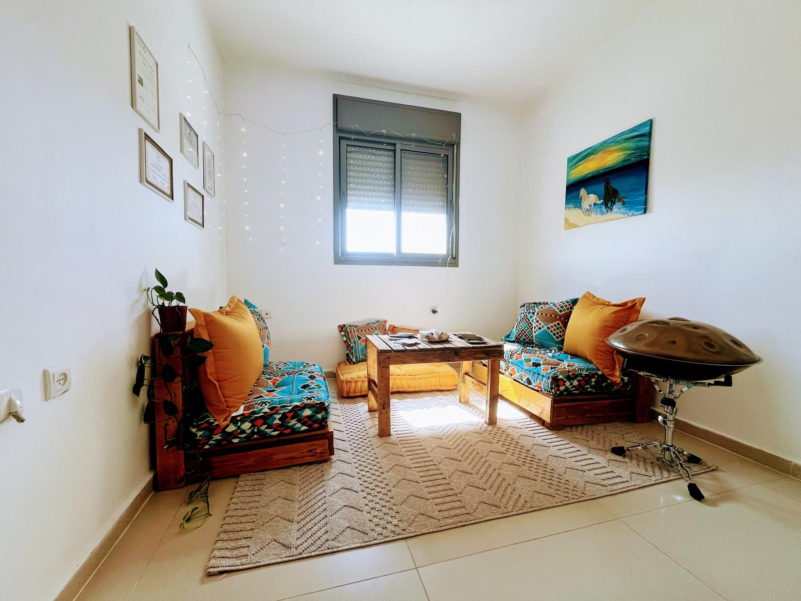
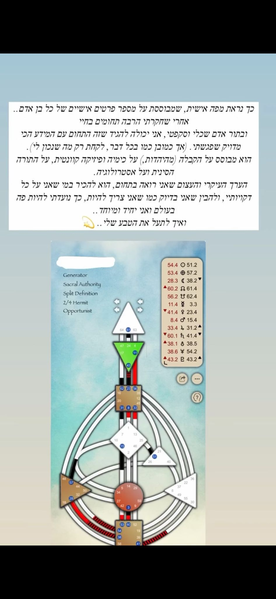

מאבחנת ומטפלת רב תחומית
תיאום פגישת אבחון בוואטסאפנעים מאוד, אני אוריה אלחרר, בת 35, גרה בחריש.
אני אדם שאוהב ללמוד, לחקור ולהעמיק בנושאים שמעניינים אותי..
מאז שאני ילדה הלכתי בדרך משלי, ייחודיות ושונה, בחשיבה עצמאית ובהסתכלות רחבה ולפרטים במקביל.
נמשכתי לחקור בני אדם, את עולמם הפנימי, התנהגויות, שפת גוף, דפוסים,
והרבה רצון לעזור ולכוון אנשים, בעזרת הידע שאני מקבלת בדרכים שונות...
כבר בגיל 14 למדתי לבד קריאת כתב (גרפולוגיה) ופיענחתי לאנשים שאני לא מכירה. הפתעתי אנשים ואת עצמי מכמות המידע שקיבלתי.
במשך השנים חקרתי כל פעם דרך כלי אחר.
ועם השנים התחלתי להשתמש בשילוב הכלים הרבים שרכשתי, כדי לאבחן, לדייק, לכוון ולטפל באנשים.
הסוד טמון בדיוק ובהתאמת הכלים, לכל אדם ובכל רגע נתון.

במקצועות אני מורה לחינוך מיוחד, מטפלת מוסמכת מאסטר NLP, תת מודע, מתמחה בhuman design (בניית מפות אישיות והכוונה דרכם ), קלפי טארוט, שיטת סאטיה ועוד כלים טיפוליים ואבחוניים...
דיג׳י ומוזיקאית.
במהלך שנות העבודה שלי כעצמאית, בניתי כלי אבחוני משלי בתחום הפסיכודידקטי,
ייחודי ושונה מהדרך המקובלת.
בעזרתו כבר 13 שנים אני זוכה להגיע ללב כל ילד/נער ולעשות איתם ועם הוריהם תהליכים מדהימים ומרגשים.
ביניהם בעיקר בעלי לקויות למידה/על הרצף האוטיסטי/קשיי התנהגות/adhd ועוד.
לאורך הדרך מצאתי שוב ושוב שמוזיקה וריקוד הם כלים טיפוליים מדהימים, שעושים פלאים, בכל סוגי וגילאי האנשים, ומחברים לבבות.
בשיטה הזו אנחנו חוזרים לרגעי שורש- נקודות בהן נוצר דפוס או אמונה שמעכבים אותך עד היום- ומבינים מה הפעיל אותם. בעזרת תרגילים מנטליים מדויקים כמו תרגילי ציר זמן, אנחנו משנים את הפרשנות שהתת־מודע מחזיק ומסייעים לבנות דפוסים חדשים, מקדמים ומדויקים לך. זהו תהליך תכלסי, עמוק ומעורר שינוי.
חשוב לדעת: השיטה אינה קסם- היא דורשת רצון אמיתי לעבור תהליך פנימי.
לשאלות נוספות בוואטסאפשיטה טיפולית שמבוססת על שיח עמוק ונוכחות בגוף. הרעיון המרכזי הוא לא למהר לפתור, אלא להסכים לפגוש את מה שכואב באמת- שם מתחיל הריפוי. בטיפול נבחן דפוסים שנוצרו בילדות, ונראה איך הם משפיעים על חייך היום. נוצר חיבור מדויק בין מה שקורה בפנים לבין מה שקורה בחוץ.
מפה אישית שמבוססת על פרטי הלידה שלך, ונותנת הבנה מעשית ומפתיעה לגבי איך אתה בנוי. הדרך לקבל החלטות, מערכות יחסים, אנרגיה, ייעוד, ועוד. אנשים מדווחים שפתאום הכל "עושה סדר"- דברים שהרגשת על עצמך, מקבלים אישור, ומתחזקת תחושת קבלה עצמית.
השיטה אינה מיסטית, אני משתמשת בה ככלי אבחוני, וכל מה שאני עושה קיבל אישור הלכתי מרב.

הטארוט כאן לא עוסק בעתיד, אלא בהבנה של מה עוצר אותך כרגע, מה באמת קורה מתחת לפני השטח, ואיך להשתחרר ממנו. הקלפים משקפים את הסיפור הפנימי שלך ברגע הזה, ומכוונים אותך לדיוק, בהירות וצמיחה.
הקלפים אינם מיסטיים, אלא כלי התבוננות שמכוון לעבודה פנימית.
גם כאן, הכל נעשה באישור הלכתי.
1) בין 2-4 מפגשי אבחון אישיותי, יעוץ והכוונה.
בעזרת קריאת מפה אישית (human design) , קלפים, טכניקות של nlp ועוד.
המטרה היא, לכוון ולדייק אותי- כיצד אני אמור לפעול בעולם, מה הדרך הטבעית שלי שעושה לי טוב. הכרה בטבע שלי, ולמה אני אמור להיות בדיוק כמו שאני בנו